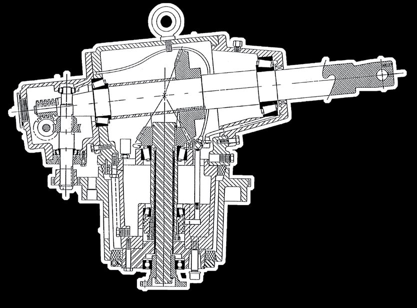
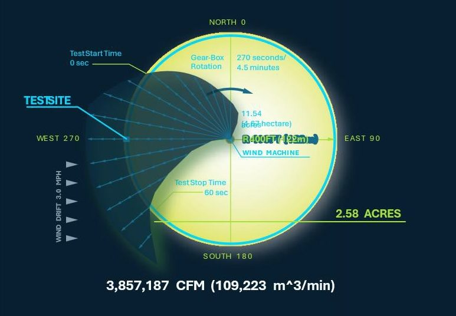
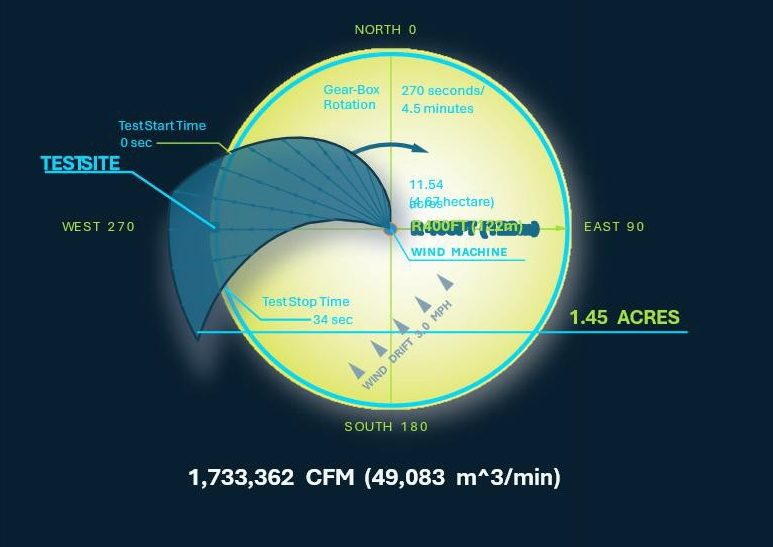
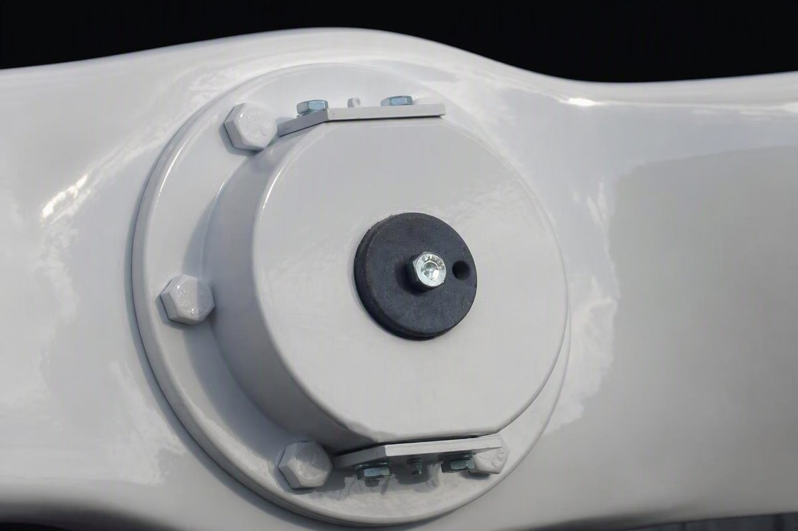
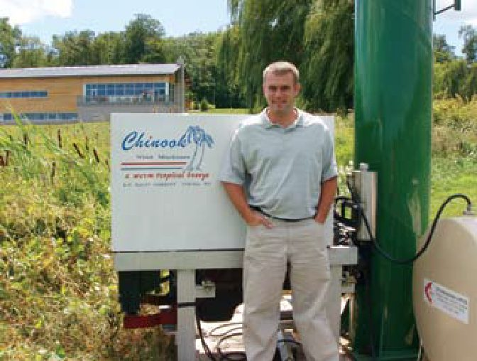

Frost protection the Chinook Wind Machine way. Chinook means a warm tropical breeze.
Chinook means a warm tropical breeze.
The Chinook Difference. Manufactured by H.F. Hauff since 1986.
A newly designed low-crop Chinook: a 25-foot tower paired with an 18-foot blade, with a 150 hp blade specification, on a braced, wheeled base.
Source: HFH Baby Chinook V2.pptx (supplied by H.F. Hauff, Oct 2026)

The Chinook wind machine is available in propane, diesel and electric.
The standard Chinook ground powered wind machine comes equipped with a Ford V-10 6.8L liquid propane engine that's EPA certified. FPT 6.7L and 4.5L Diesel engines also available on all new Chinook wind machines.
All ground-powered machines are equipped with engine monitoring systems to provide hour meter, ammeter, oil shutdown and water temperature shut down with engine over speed protection shut down. In addition, all units have an optional Chinook auto start system.

Chinook gear drives are made of hardened steel alloy, with spiral bevel gears lapped in pairs. Chinook gearboxes have 100% Timken B-10 tapered roller bearings that have a working life expectancy of 18,000 hours. This represents a life expectancy 10% greater than any current competitive gear drive.
In addition to larger more stable drive shafts, Chinook gear drives are pressure lubricated and fan cooled. The result is oil temperatures that are at least 20 degrees Fahrenheit cooler and nearly twice the usable life span of the gear oil.
Each gear box includes a separate bolt-on speed reducer that can be serviced without a boom truck, and Chinook gear drives interchange with most competitive gear drives.
Added from HFH Fowler V11.pptx, slide 16.


The drive train is factory engineered and dynamic spin-balanced for vibration free operation and longer bearing life. Chinook Wind Machines uses only one slip joint, substantially reducing potential wear and vibration that can also damage other components in the tower.
Chinook Towers are built 1/4" x 20" diameter on a spiral welded steel tubing. All towers measure 35' 2" to the center of the fan hub.

Frost damage to your crop can occur in as little as 20–30 minutes.

The Chinook prop widens the sector angle of coverage to 80 degrees, mixing air in both the horizontal and vertical planes. In one documented test the Chinook fan blade mixed and moved 3,857,187 CFM of air compared with 1,733,362 CFM from another competitive fan blade.


Source: HFH Marketing Presentation Fowler Packing Blacks V11.pptx, slide 5 (supplied Chinook brochure). Manufacturer-reported comparison; not a site-specific guarantee.
Increased air movement and reduced tip drag and turbulence. The one-piece composite fiberglass blade (triax fiberglass over a urethane foam core) is approx. 100 lb including the steel teeter hub.
Source: HFH Comparison V2.pptx, slides 3 & 5; Fowler V11.pptx, slide 11. Confirm weight: brochure also lists 105 lb swing weight

Pre-existing concrete pads can be moved. (Available only in the United States)

Our Auto Start provides peace of mind, starting and shutting off your wind machine at your pre-determined temperature setting.
Telemetry allows orchardists to control fundamental operations from their personal computer via radio, cellular or satellite, logging temperature, RPM and battery level of each machine, with setpoint, arm, disarm and all-stop control.

| Component | Brochure specification |
|---|---|
| Propeller construction | One-piece triax fiberglass over urethane foam core |
| Airfoil & hub | NACA 4409 airfoil, Dornier swept tips, trailing-edge wedge. Airfoil begins 14" from hub center |
| Dimensions | 216" overall, 200" usable airfoil, 14" center |
| Swing weight | 105 lb (spec sheet); approx. 100 lb incl. steel teeter hub (narrative) Confirm |
| Sector angle | 80° (vs 45–47° / 45–60° for other props, by source) Confirm comparison range |
| Coverage | 15+ acres mature tree fruit, up to 18 acres lower-growing crops; spec sheet: 14+ acres, min. 800–850 ft Confirm 14+ vs 15+ |
| Tower | 20" diameter, ¼" wall spiral-welded steel; 35' 2" to hub center. No concrete tower weights |
| Drive line | 3 sections, 1 slip joint; 1,000 RPM operating speed, dynamic spin-balanced at 1,400 RPM |
| Gear box lubrication | Pressure-fed oil spray to each gear and bearing; operates 20°F cooler. AGMA rated |
| Bearings | 100% tapered roller bearings; B-10 design life 18,000 hours. Upper box drag bearing 12" diameter |
| Housings | Cast iron; lower box fan-cooled, operates at 180–190°F |
| Input splines | Upper box 1.25 × 10 spline (spec sheet; 1.75 × 10 in another source) Confirm; lower box 1.375 × 10 spline |
| Speed reducer | Separate bolt-on speed reducer box, serviceable without a boom truck |
| Interchange | Chinook gear drives interchange with most competitive gear drives (same gear ratios) |
| Safety controls | Murphy safety shutdown controls for oil pressure, temperature and overspeed; optional auto-start with centrifugal clutch |
| Power options | Brochure: gasoline, propane, natural gas, diesel and electric; standard Ford Triton V-10 6.8 L propane Confirm current options (page above lists propane, diesel, electric) |
Source: HFH Marketing Presentation Fowler Packing Blacks V11.pptx, slides 11, 12 & 16 (H.F. Hauff specifications page).
| Test | What was reported |
|---|---|
| Jan 21, 1993 · Doug Merkle · Ken Leach ranch, Wapato, WA | Comparison of Orchard Rite (2), Sentinel and Chinook blades in a mature apple and prune orchard; the report ranks Chinook first in estimated mixed-air volume. |
| Jun 7, 1996 · Cruickshank International · FEC Horticulture | Two blade trials with towers switched between tests. Average air speed: Chinook 2.24 m/s vs 0.94 m/s (test 1) and 1.16 m/s vs 0.755 m/s (test 2). |
| Jan 2003 · Ron Lucas demonstration · Glenn Clifford orchard near Pasco, WA | At 400 ft: Chinook 460 8.63 mph, 69.6 s air duration, 88° sector; Chinook V-10 8.26 mph, 60.3 s, 76.4°. No recordable airflow from the Orchard Rite blade at 400 ft (formal test sheet). |
Source: HFH Marketing Presentation Blades V2.pptx, slides 4–6, 20–22 & 24. Historical results under tested conditions only; source versions contain some differing CFM totals. Not a guarantee of present-day performance.
“We ended up installing five diesel Chinooks.”
Curtis Fielding reported that four spring frosts in 2006 caused no frost damage in the protected vineyard areas.
Source: HFH Marketing Presentation Fowler Packing Blacks V11.pptx, slide 9 (Chinook brochure testimonial). Individual results vary.

Particular models, such as the Chinook, conservatively protect 15+ acres of established tree fruit and even further for low growing crops such as grapes.
Source: “Frost Protection the Wind Machine Way,” Dean Hauff, Grapevine Magazine (2011), formerly on hfhauff.com
Warm air rises while cold air settles on the lowest points. Wind machines draw the warmer inversion layer of air from the upper atmosphere, mixing it with cooler air on the ground, and raising temperatures on average 3-5 degrees F. above critical temperatures. The machine rotates a full 360 degrees every 4 ½ minutes, keeping ice crystallization from forming on the fruit bud or tissue.
Source: “Frost Protection the Wind Machine Way,” Dean Hauff, Grapevine Magazine (2011), formerly on hfhauff.com
In springtime, the wind machine protects the fruit bud; in the fall it protects the plant's leaves from freezing which helps to let the berry fully mature to its maximum sugar level. Wind machines will actually work to protect the vines themselves from freezing to the ground.
Source: “Frost Protection the Wind Machine Way,” Dean Hauff, Grapevine Magazine (2011), formerly on hfhauff.com
A unique fixed wedge on the trailing edge of each Chinook prop works much like the wing flaps of an airplane, increasing air movement along the slower portions of the blade. Sector angle coverage increased from 45 to 80 degrees, and Dornier swept tips reduce turbulence and drag.
Source: “Frost Protection the Wind Machine Way,” Dean Hauff, Grapevine Magazine (2011), formerly on hfhauff.com
The Chinook wind machine is available in propane, diesel and electric. Standard: Ford V-10 6.8L liquid propane (EPA certified); FPT 6.7L and 4.5L diesel also available.
Our Auto Start provides peace of mind, starting and shutting off your wind machine at your pre-determined temperature setting.
All towers measure 35' 2" to the center of the fan hub.
Pre-existing concrete pads can be moved. (Available only in the United States)
Yes. The newly designed Chinook Inversion 25 pairs a low-crop 25-foot tower with an 18-foot blade (150 hp blade specification).
Source: HFH Baby Chinook V2.pptx
H.F. Hauff will reinstall the old blade at no cost if Chinook does not cover more ground.
Source: HFH Comparison V2.pptx, slide 6. Confirm current offer terms
Yes. We offer a wide range of equipment as well as parts and service. Please contact our headquarters office for all of your service needs:
Toll-free: 855-855-0318
Phone: 509-248-0318